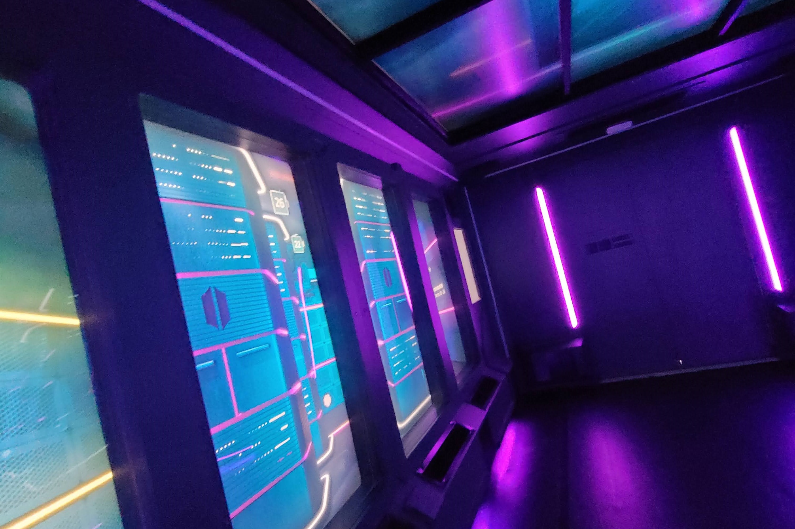
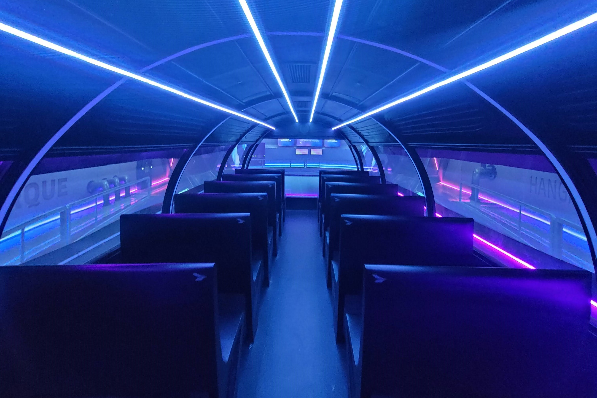

Un fascinante viaje de exploración para descubrir la maravillosa e inmensa biodiversidad de nuestro Mar Argentino. Una aventura en la que descubriremos los secretos más asombrosos del Océano Atlántico Sur. Este simulador permitirá a los visitantes vivir una experiencia multisensorial completamente inmersiva.
Odisea Submarina



Nuestro recorrido comienza con un breve video explicativo donde nos proyectara como sera nuestro emocionante recorrido. Luego nos trasladeremos dentro del "Transbordado T-08", una fantastica plataforma que nos llevara desde la estacion Ecoparque hasta el Golfo San Matias, durante este recorrido vamos a informarnos acerca de las problematicas de la actualidad como por ejemplo la sobre pesca de barcos extranjeros en zonas protegidas. Por ultimo nos adentraremos dentro del submarino "Explorador S-21" en la cual nos llevara al fondo del mar argentino y observaremos toda los animales y la fauna marina que hay en el mar argentino.
Nuestro enfoque es mostrarle al publico la biodiversidad que tiene el Mar Argentino, apuntando siempre el cuidado del mismo y que cada persona pueda llevarse consigo mismo una reflexion de lo que sucede hoy en dia en nuestros mares.